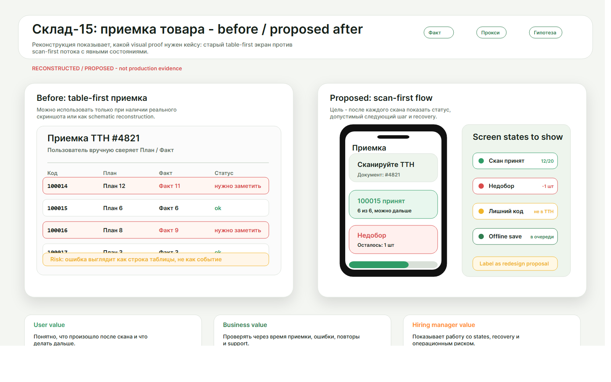
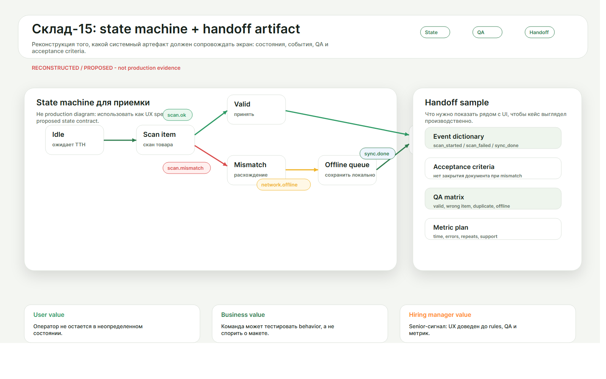

Маленький экран и физический сканер
Интерфейс должен поддерживать быстрые повторяющиеся действия, а не требовать внимательного чтения каждой строки.
Я разобрал сценарий приемки в складском Android/ТСД-приложении и перестроил его вокруг главного события операции — скана. Вместо ручной сверки строк интерфейс сразу отвечает оператору: позиция принята, найдено расхождение, действие сохранено без сети или нужно восстановиться.

Кладовщик работает в движении: в руках ТСД, рядом товар, документ, шум склада и мало времени на решение. В такой среде таблица с планом и фактом быстро становится источником ошибок: оператор сканирует позицию, но все равно ищет строку глазами, сверяет количество и пытается понять, можно ли продолжать.
Интерфейс должен поддерживать быстрые повторяющиеся действия, а не требовать внимательного чтения каждой строки.
Недобор, лишний товар, повторный скан и неверная позиция становятся отдельными состояниями с понятным следующим шагом.
Если действие сохранено локально, интерфейс не притворяется, что оно уже синхронизировано с сервером.
Я сделал скан главным событием сценария. После каждого скана интерфейс не просто заполняет поле, а отвечает на рабочий вопрос оператора: позиция принята, есть расхождение, товар лишний, код не подходит, действие ушло в локальную очередь или операция закрыта.
Движение показывает не украшение, а ход операции: скан принят, строка сверена, появилось расхождение, действие сохранено без сети, итог синхронизирован. Такой прототип помогает обсуждать не “как выглядит экран”, а “что система сказала оператору после действия”.
Обратная связь остается заметной: оператор понимает, что система приняла действие.
Подсветка ведет к строке, где изменилась фактическая приемка.
Ошибка объясняет, что не совпало и как продолжить без хаоса.
Интерфейс честно отделяет локальное сохранение от серверной синхронизации.
Финальное состояние пригодно для передачи в разработку: принятое, спорное и остаток видны отдельно.
Этот цикл показывает логику прототипа: каждое состояние связано с событием, сообщением для оператора и ожидаемой проверкой со стороны QA.
Главный артефакт кейса — не отдельный экран, а контракт поведения: какое событие запускает состояние, что видит оператор, что можно исправить без перезапуска и как QA проверяет каждый переход.
| Состояние | Триггер | Пользовательская ценность | QA-проверка |
|---|---|---|---|
| Успех | Скан ожидаемой позиции | Оператор видит, что позиция принята и можно продолжать. | Подтверждение заметно, связано со строкой и не исчезает слишком быстро. |
| Расхождение | Принятое количество отличается от плана | Оператор видит дельту без ручного поиска в таблице. | Строка объясняет причину, величину расхождения и следующий шаг. |
| Неверный товар | Незапланированный штрихкод | Ошибка не ломает поток: понятно, почему товар не принят. | Состояние можно исправить без перезапуска документа. |
| Без сети | Потеря соединения | Работу можно продолжить, но статус синхронизации не замаскирован. | Локальная очередь не выглядит как завершенная операция. |

Для такого сценария важны не абстрактные лайки к интерфейсу, а операционные сигналы: время до первого валидного скана, доля повторных сканов, скорость восстановления после ошибки, частота конфликтов без сети и количество вопросов по статусам.
Время до первого валидного скана и доля повторных сканов по документу.
Время вернуться к работе после неверного товара, расхождения, лишней позиции, сбоя синхронизации или работы без сети.
Таблица состояний, словарь событий и критерии приемки уменьшают риск разночтений между дизайном, разработкой и QA.
Оператор быстрее понимает, что принято, что не совпало и какое действие безопасно делать дальше.
Ясные статусы должны снижать вероятность пересортицы, повторной работы, лишнего обучения и обращений в поддержку. Это нужно подтверждать на реальных операциях.
Сценарий описан через события, состояния и критерии приемки, поэтому его можно обсуждать с разработкой и QA без потери смысла.